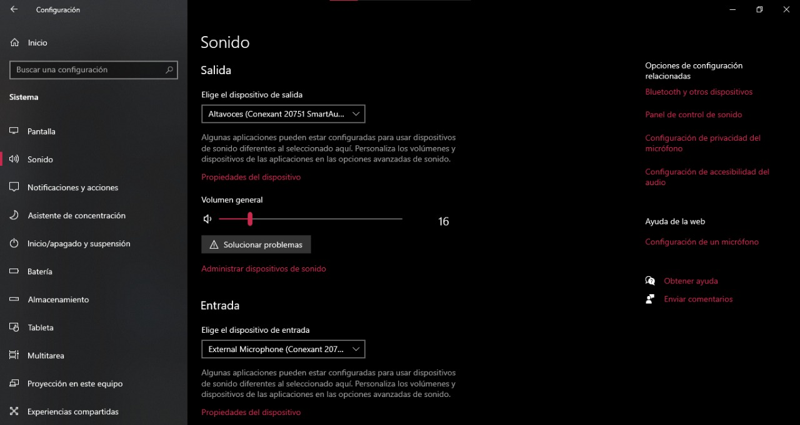

Como cualquier equipo de computo tiene sus problemas y pocas soluciones al estar hablando de todo tipo de sotfware, a continuacion veremos como solucionar algunos de ellos.
Si tu computador tarda demasiado en iniciar, es probable que se deba a que el sector de inicio está lleno de procesos que buscan ejecutarse con el arranque del sistema. En ese sentido, te enseñaremos a eliminar los procesos que no hacen falta para agilizar el inicio.
La lentitud de la computadora puede estar dada por disponer de poca memoria RAM, problemas en el arranque del sistema, software innecesario, drivers y controladores antiguos sin actualización, baja velocidad en la conexión a internet, inconvenientes en el registro de Windows, archivos basura, problemas con el disco
Si al navegar por Internet le aparecen ventanas emergentes en las páginas que vista con su navegador, lo más probable es que tenga aplicaciones o barras de herramientas invasivas en su equipo. Lo mismo se aplica si cambia su página de inicio a otra sin que usted haya hecho nada por modificarla.
Al iniciar windows se cargan algunos programas que son innecesarios o que no utilizamos habitualmente, haciendo que el proceso de inicio sea más lento. Para quitar estos programa el propio sistema operativo nos ofrece la herramienta msconfig (Inicio/Ejecutar) y existen otros programas de terceros que nos ofrecen información detallada sobre lo que se carga en el arranque y lo superfluo como Soluto, autoruns, Starters, etc.
¡Tu PC puede dejar de funcionar automáticamente! Cuando el ordenador se apaga solo es porque algo no anda bien en la computadora y sus causas se deben a un sin fin de problemas desde una simple limpiada a la memoria ram hasta un fallo en uno de los componentes de la placa madre o incluso un problema de virus.
estos errores por lo general son de errores de controlador. Para corregirlo realiza los siguientes pasos:
* verifique que el ordenador tenga suficiente espacio: para una actualización de un sistema operativo de 32 bits se requiere mínimo 16 GB y para uno de 64 bits al menos 20.
* ejecuta Windows update: Descarga e instala las actualizaciones disponibles incluidas las actualizaciones de software y hardware y algunos controladores de terceros. Después ejecuta el solucionador de problemas para Windows 10 para solucionar errores de Windows
* comprueba los controladores de terceros y descarga las actualizaciones disponibles
* Desconecta el hardware adicional: retira todas las unidades o dispositivos de almacenamiento externo, bases y cualquier hardware que este conectado al dispositivo que no sea necesario para la funcionalidad básica.
* Compruebe si hay errores en el administrador de dispositivos: haz clic en el botón Inicio luego, en búsqueda de la barra de tareas, escribe Administrador de dispositivos y luego da clic. En la ventana que se muestra, busca cualquier dispositivo con un signo de exclamación amarillo junto a él. haz clic con el botón derecho en el nombre del dispositivo y selecciona Actualizar software de controlador o Desinstalar para corregir los errores.
* Quita el software de seguridad de terceros: antes de hacerlo debes saber cómo volver a instalar los programas y tener a mano todas las claves de producto necesarias. Mientras Windows Defender protegerá tu dispositivo.
Repara los errores del disco duro:
*primero da clic en el botón de inicio luego en el cuadro de búsqueda de la barra de tareas
*escribe símbolo del sistema y da clic. En la ventana que aparece, escribe chkdsk/f C: y presiona enter. después de hacer esto las reparaciones se inician automáticamente en el disco duro y tendrás que reiniciar el dispositivo.
Haz un reinicio limpio en Windows
*Restaurar y reparar archivos de sistema: da clic en el botón Inicio luego escribe símbolo del sistema y da clic. En la ventana que aparece, escribe DISM.exe /Online /Cleanup-image /Restorehealth y presiona la tecla enter.
Otros errores comunes de actualización e instalación:
0xc1900223: Este error señala que ha ocurrido un problema al descargar e instalar la actualización seleccionada. Después de esto Windows update lo volverá a intentar más tarde por lo que no necesitas hacer nada en este momento.
0xC1900208 – 0x4000C: Este error señala que en el pc esta instalada una aplicación que impide que se complete el proceso de actualización. Tendrás que comprobar que las aplicaciones incompatibles están desinstaladas y después intenta hacerlo de nuevo.
0xC1900107: este señala que existe una operación de limpieza de un anterior intento de instalación que sigue pendiente y requiere que se reinicie el sistema para continuar con la actualización. Lo que tienes que hacer es reiniciar el ordenador y volver a ejecutar el programa de instalación. Si esto no no resuelve el problema, usa la utilidad Liberador de espacio en disco y realiza una limpieza de los archivos temporales y de los archivos de sistema.
0x80073712: En este caso puede que falte un archivo necesario para Windows update o que este dañado. Puedes Intentar reparar los archivos del sistema seleccionando el botón Inicio y escribiendo símbolo del sistema en el cuadro de búsqueda y luego darás clic. En la ventana que aparece, escribe DISM.exe /Online /Cleanup-image /Restorehealth y presiona la tecla enter.
0xC1900202 – 0x20008:Este error señala que el ordenador no cumple los requisitos para descargar o instalar la actualización a Windows 10.
0x800F0923: Este error señala que un controlador o software del ordenador no es compatible con la actualización a Windows 10.
0x80200056:Este error señala que la actualización se interrumpió debido a se reinicio el equipo o se cerro la sección. Lo que puedes hacer es intentar actualizar de nuevo y asegurarse de que el equipo esté conectado y encendido.
0x800F0922: Este error señala que el equipo no puede conectarse con los servidores de Windows update. En caso de uses una conexión VPN para conectarse a una red de trabajo, deberás desconectarte de la red y desactivar el software VPN para después intentar realizar la actualizació.
0x80070070 – 0x60000: Este error puede señalar que el equipo no tiene suficiente espacio disponible para instalar la actualización. Tendrás que liberar espacio en la unidad y volver a intentarlo
0x80300024: este error se produce cuando el disco, partición o volumen de destino no admite la operación de disco especificada.
0x80070002 0x20009: este error señala que el sistema no puede encontrar el archivo especificado. Tendrás que remover los demás discos en donde no vas a instalar Windows 10.
problemas de sonido
verifica la salida del altavoz
Comprueba que este seleccionado el dispositivo de salida de audio correcto en caso de que hayan varios
-Haz clic derecho en el icono altavoces que se encuentra en la barra de tareas.
-Después selecciona abrir configuracion de sonido
-una vez estes en configuracion de sonido verfica que el dispositivo de salida de audio que esta seleccionado sea el indicado
Verifica que el audio se reproduce en el dispositivo de audio sea el de tu preferencia, como altavoces o auriculares.
Si esto no funciona, realiza lo siguiente:
ejecutar el solucionador de problemas de audio
- haz clic derecho en el icono de volumen que se encuentra en la barra de tareas
- haz clic en solucionar problemas de audio
- se ejecutará un diagnostico y solucion al problema de sonido, incluyendo una prueba de sonido para comprobar que el problema esta resuelto
verifica la configuración de sonido
Haz clic con el botón derecho en el icono del Altavoces de la barra de tareas y selecciona Abrir mezclador de volumen.
Asegúrate de que los dispositivos de audio no estén silenciados y de que no se hayan deshabilitado.
corregir los drivers de audio
Cuando ocurren problemas de hardware por lo general se debe a que los controladores no funcionan correctamente y esto puede se porque no estan actualizados causando un mal funcionamiento.
Para actualizar tu controlador de audio automáticamente:
-escribe administrador de dispositivos en el cuadro de busqueda de la barra de tareas y seleccionalo
- selecciona entradas y salidas de audio
- despues de expandirlo encontraras los nombres del altavoz y microfono
- haz clic derecho y selecciona actualizar controlador. Busca automáticamente el software de controlador actualizado para actualizar el controlador de audio.

{kind=link}
{kind=link}
{kind=link}
{kind=link}
{kind=link}
{kind=link}